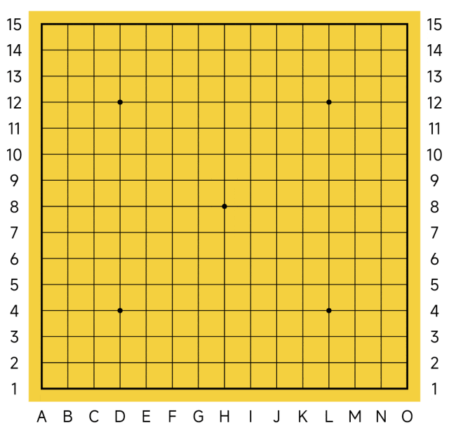
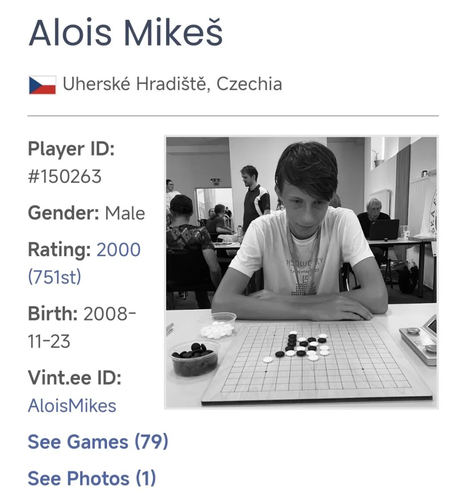
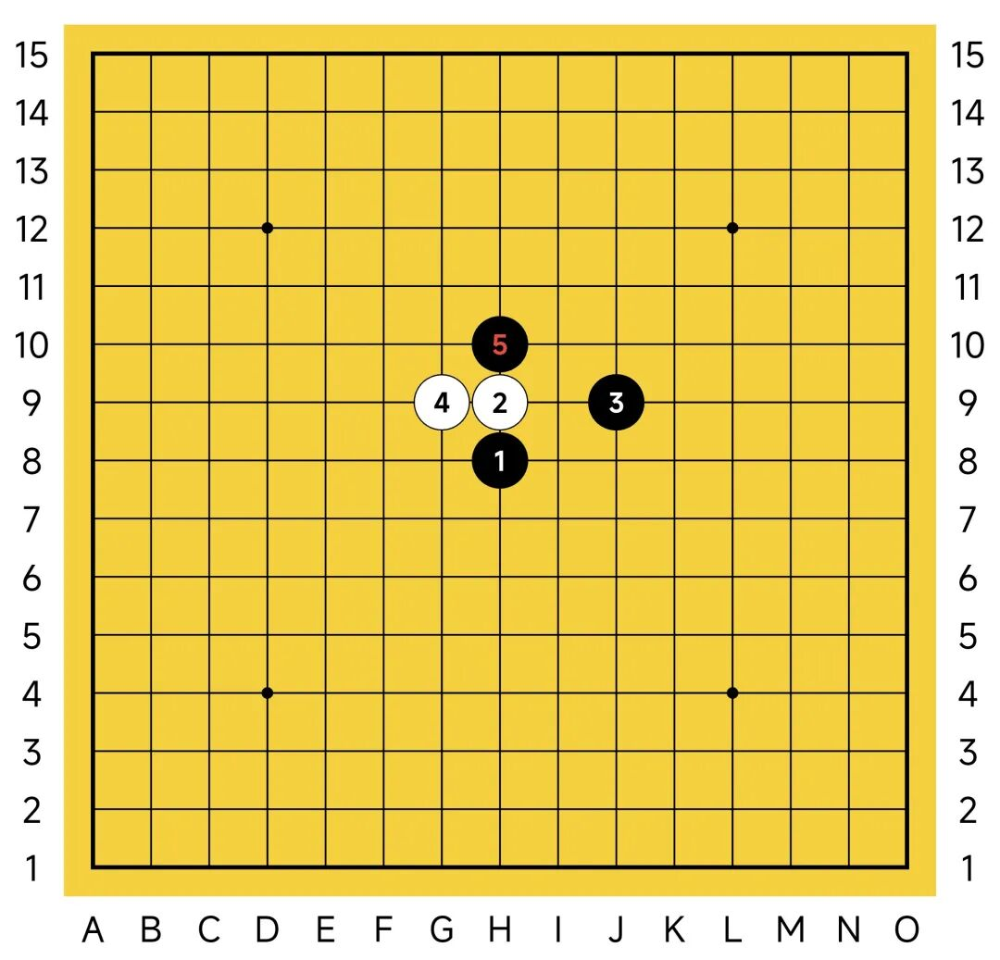
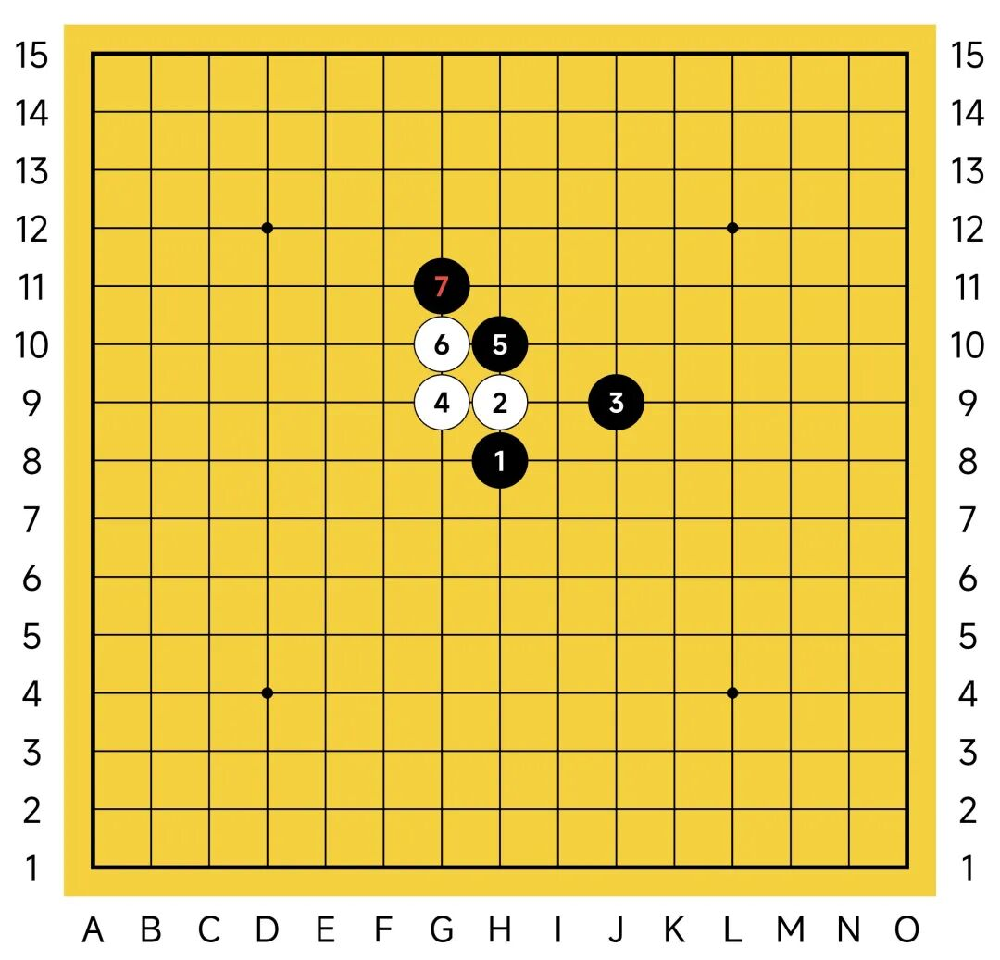
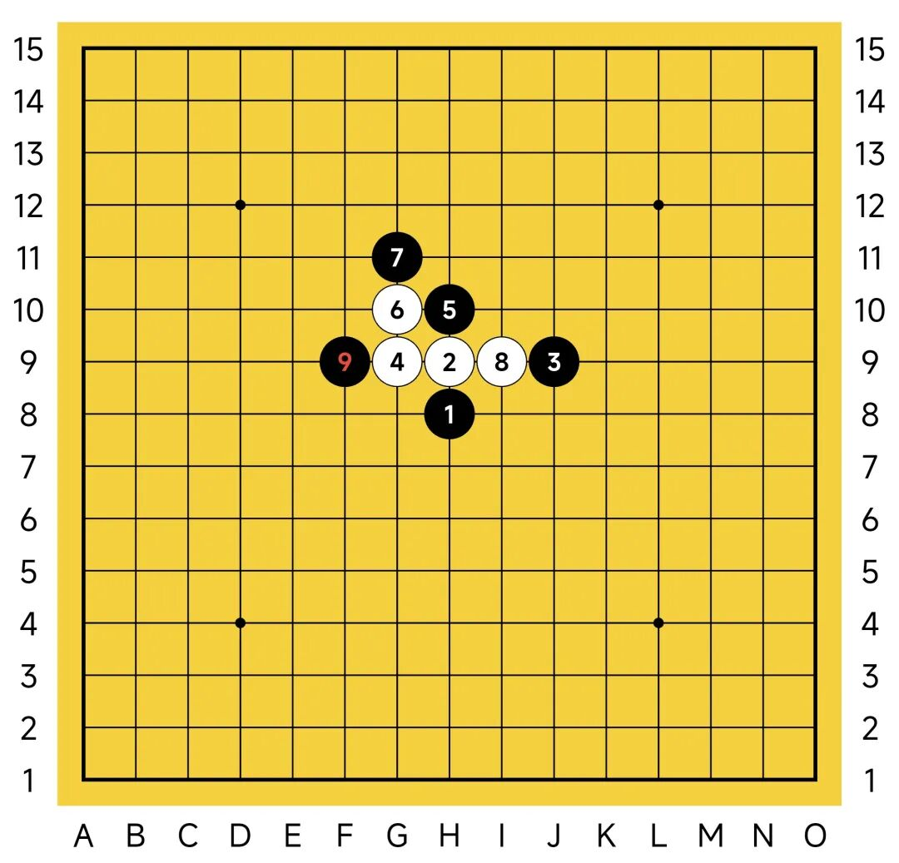
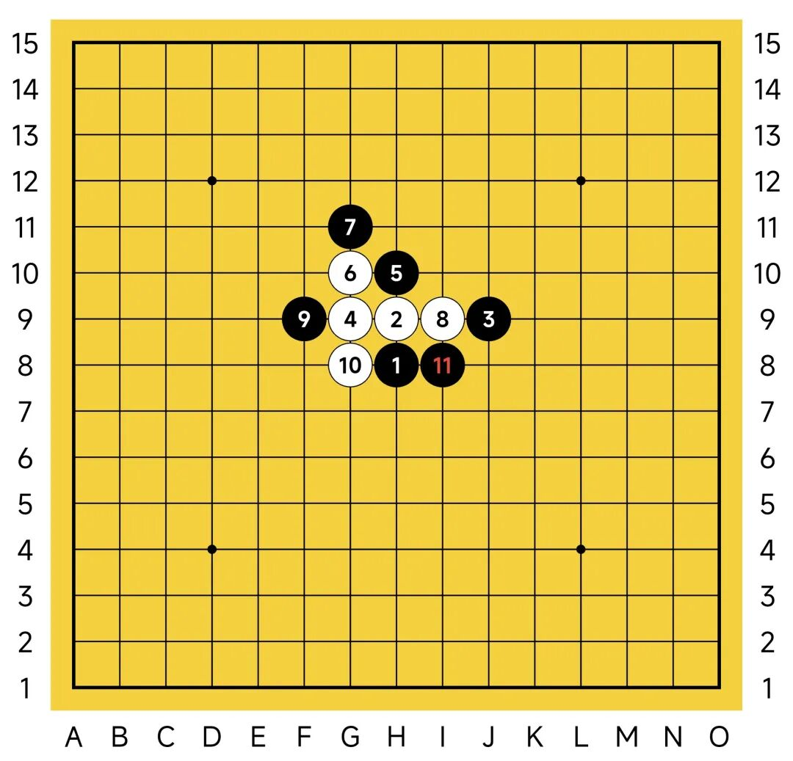
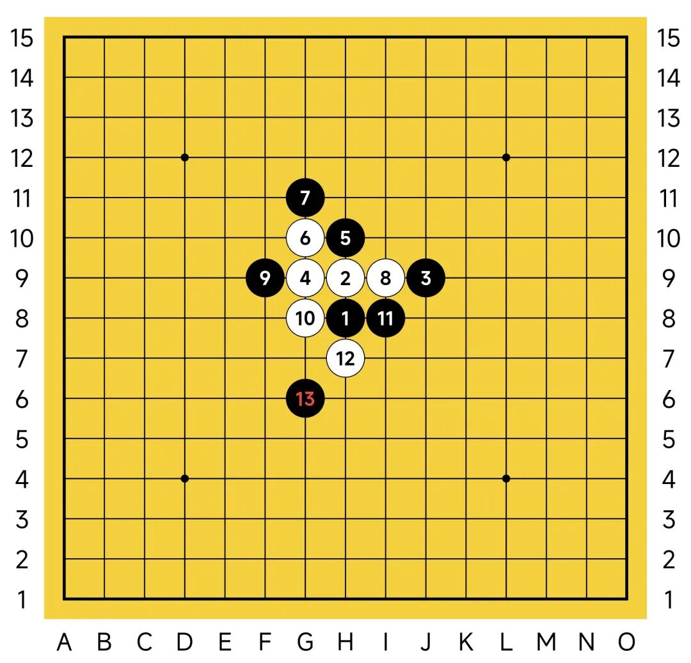
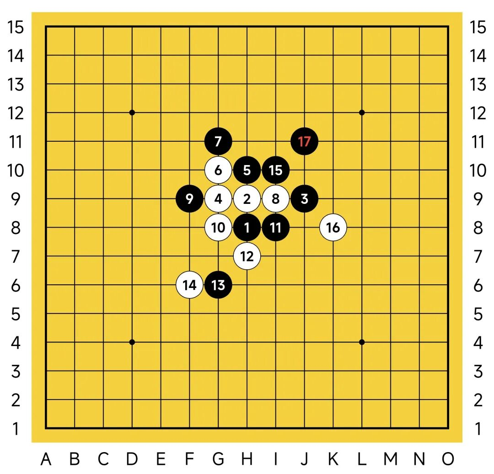
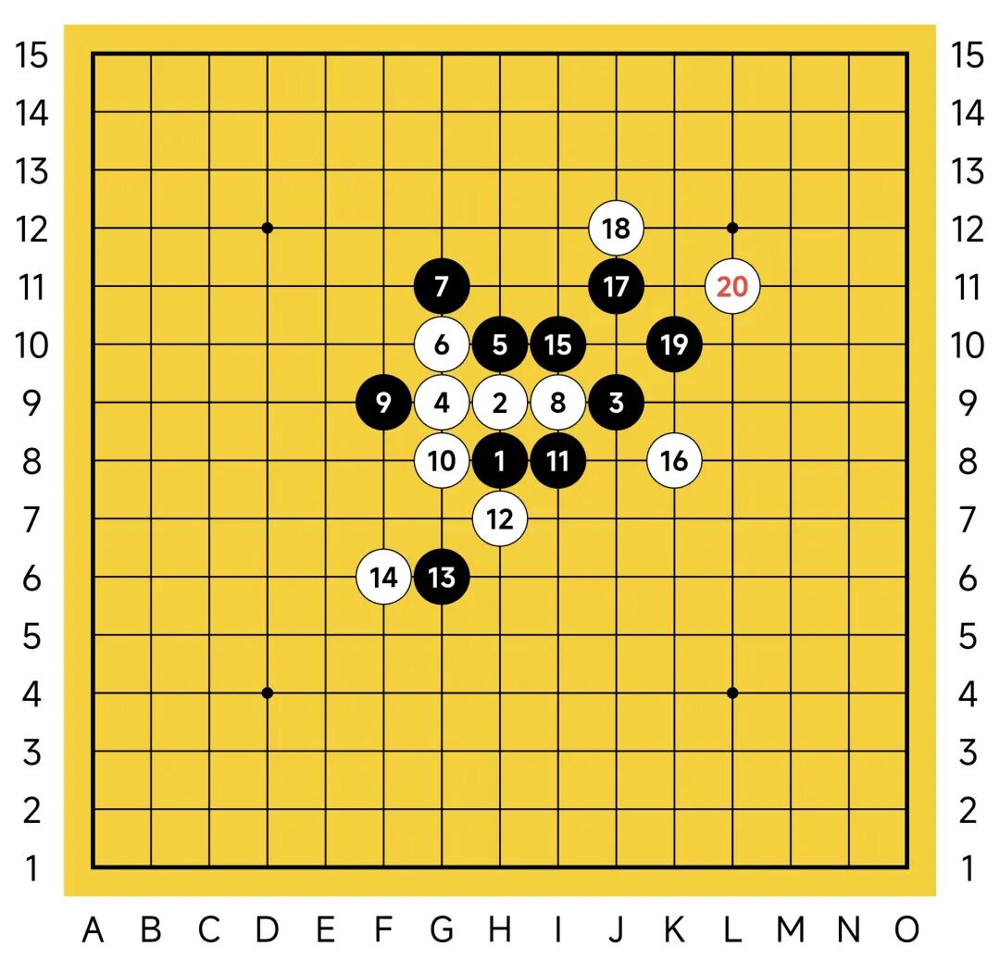
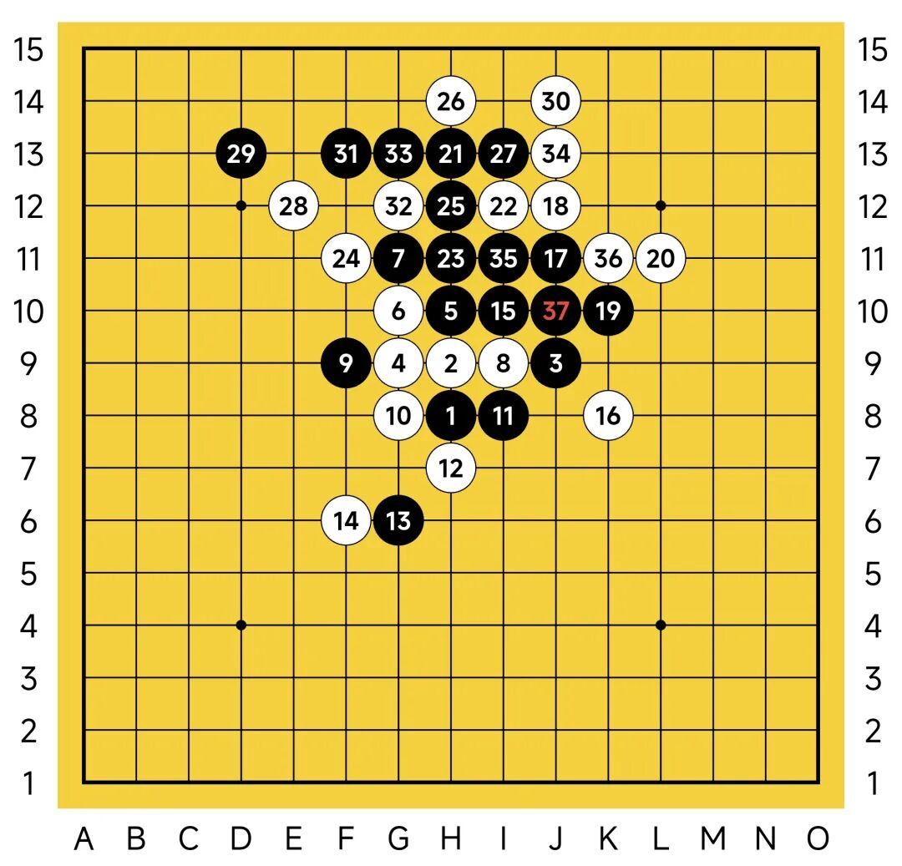

2025第六届世界连珠青少年杯A+B组第三轮
有备而来的世锦赛小将
在今年的世界连珠青少年五子棋杯中，我以八胜一负的成绩获得A+B组冠军。有关前两轮的内容，你可以查看文末。第三轮我遇到了现在正在捷克激战世界五子棋锦标赛的捷克小将，Alois Mikeš。


2025年捷克世界五子棋锦标赛连珠项目BT，五目项目QT及BT参赛选手
连珠世界排名第751位
五目世界排名第67位
这位来自捷克的小将是位五目选手，连珠赛事只是顺带参加，豪取二连胜后在第三轮和我相遇。实际上我去年业已和他交锋过，当时他的连珠国际等级分只有约1700余分，且对局大多数是五目对局，以约2000分的等级分居于五目榜第67位（实际上无禁手五子棋的世界排名中，只有123名选手在榜），是一位具备很大潜力，可以期待厚积薄发的选手。这次再相遇，观战绩可知进步神速，虽仍有不小差距，还是可见一斑。

开局我随手开了个残月，实际上并不好。赛后查这位选手的惯用开局，发现一个饶有趣味的情况，文末再提。其实塔十中没有充足把握时不应开出残月局，因为此局可通的变化太多了。常见的比如通疏星，通溪月，通金星，通寒星等。去年新泰的世界团体锦标赛里，一盘残月局也没有。局中仍认为这位以五目更长的选手会交换让我下白4或者随机使用一个冷门的白4应对，谁知这位捷克小将火速下了一个连活二的4。有印象，但已经模糊。仍然还是较轻松的，随手一个交换下去让他挑选黑5。但是当我按下交换键时，突然想到不妙的事情：这个白4应该通的是常规寒星四打。

果不其然，对手很快给出了这个意料之中的黑5。现在已经冒冷汗了。后续我虽知道定式，但需要在纷乱复杂的定式库中提取，等我回忆过来，恐怕时间已经耗没了。寒星4打黑是比较主动的，所以我交换过来拿黑，让对方拿白。对手又是很快的下出来了团角白6，看来只能硬着头皮干了——原本以为五目选手或许不谙连珠棋谱，实际上是我没有端正态度，进入现在这个不太满意的局面也是情理之中。这里的黑7有两个选择，直接连活二挡或斜活二挡住白的一个活二，通过做二挡二拉开战斗的帷幕。哪个更好呢？回忆脑海中东波斯油灯般金黄的记忆，可惜早被尘土侵蚀。勉强想到斜活二黑7的后续，实际上也只看到了后面的四五步，既已上贼船，那就开吧。黑7斜活二，待对方白8选择那两路可行变化的其中一路后，我尽量秒跟来抢抢时间，以免后盘时间压力过大。

没想到对手并没有走出正确的白8，反而撞黑棋的东墙去堵我刚刚制造出的连活二。我长舒一口气——原来对手根本就不会这一路变化！可能对手只会横线活二那一路变化，或者只是会一个开局互通的手段吧。看到对手这样行棋，压力小了许多，现在黑棋肯定必胜了，不乱搞一定不会暴毙，只不过通往必胜的路究竟有多长，现在尚无定数。我也没有什么绝妙的想法，黑9常规堵住黑棋的眠三，马步防住，先稳当当的控制好白棋，阻断其发展空间。

白10顺势向下连眠三接活二，十分自然且暗藏汹涌。我第一感是挡眠三，简单一看就可以发现白棋现在有两步的双活三取胜，这个眠三不能先防。显然需要优先处理盘面上白棋形成的两个活二。自然有f7，f11，i8，i10这四个显而易见的选点。同时适当考虑虚挡，例如挡j7等。也可以考虑做反，比如h11，这样对方就没法直接双活三取胜。思考后f7是不错的点，既阻挡对方材料，也拓展了行棋空间，白棋盘面上剩余的活二掀不起大风浪，没有后续。可惜实战中并未采纳，当时还是想牵制住对方竖线的眠三，希望尽可能速胜，走在了i8，如果白方连连冲四，我可以反掉，获取先手。如果白方强攻，我估计大概率不能持续。可实际上，欲速则不达！这个i8实际上问题很大。
我这个i8能牵制住白棋的眠三吗？不能？能获取先手吗？一定不能，这是妥妥的后手棋。实际上这步棋足以让我崩盘，因为现在盘面已经从黑必胜变为了白必胜。倘若白棋跳活左边的三，然后跳冲四接应，左边造出如此凶险的进攻，我就只能疲于防守了。在此期间，白棋可以盖住所有我可以连续进攻夺取先手的棋。我就彻底危险了，基本上是等待死亡。这是严重的失误。可惜实战中浑然不觉自己必败了。

然而对手的白12同样是重大失误，直接落于H7处挡住我的活二。我这黑11的失误比起他的白12来说算得上是小巫见大巫。赛前我业已熟悉对手热爱控盘的特点，虽然他的很多控盘并不实际成立，但能带给选手很大压力。然而捷克小将的这个白12并没有给我造成很大的压力，恰恰相反，我认为自己已经有先手了。但是不敢强攻，还是选择控了一手，我的黑13=g6，外挡住白棋的眠三，效果还不错。对方的白棋失去了发展的后续。

对方的白14同样是很大的灾难，落于f6靠在我黑13左边，深层次脱先的控盘手法。我拿着很大的先手可以操作。稳妥起见，我黑15落于i10处做二挡二，吹响进攻的号角。白16行于k8处在下方挡住我的活二，我黑17落在j11处做出两个新的活二。一条通往必胜的道路渐渐明朗。

后面的必胜比较容易了。白18对手依然弱防，我黑19顺势再做出两个眠三和一个活二。白20走在l11处挡住一个眠三，可以开杀了。这里的VCT比较明朗，虽有干扰但难度不大，感兴趣的读者可以尝试在一分钟以内解决。

实战中我花了五分钟证实这个VCT成立。还是太慢了些。白虽可以制造出长连筋干扰黑方的进攻，但杯水车薪，最终黑还是能够四三取胜。这盘棋也就结束了。
赛后发现，我开的这个残月局是对手惯用的开局之一。确实是开局的不当。记录里对手共有7盘对局是残月开局，饶有趣味的是，胜率是0%。或许准备还是不太充分。这次世锦赛他发挥尚可，相信国际排名会有一定提高。
第三局
黑方：潘冠臣①2③
白方：Alois Mikeš4⑤
最终结果：黑胜
前三局总体强度不算很大，虽有波澜但有惊无险。后面的轮次可是越发的汹险......